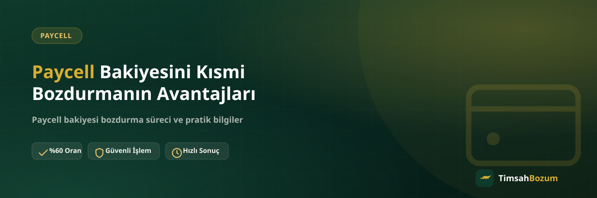

Paycell cüzdanındaki bakiyenin tamamını bozdurmak zorunda değilsin. Paycell bakiye tabanlı bir hizmet olduğu için istediğin tutarı seçip geri kalanını cüzdanında bırakabilirsin. Bu esneklik, özellikle bakiyeyi ileride de kullanmayı planlayanlar için pratik bir avantaj sunuyor.
Kısmi Bozum Nedir, Nasıl Çalışır?
Kısmi bozum, bakiyenin tamamı yerine belirlediğin bir tutarın nakde çevrilmesi anlamına gelir. Paycell cüzdanında örneğin 800 TL bakiyen varsa, bunun 300 TL'sini bozdurup kalan 500 TL'yi cüzdanında bırakman mümkündür. WhatsApp'tan bozdurmak istediğin tutarı belirtmen yeterli, kalan bakiyeye dokunulmaz.
Neden Bakiyenin Tamamını Bozdurmak Zorunda Değilsin?
Paycell, kod tabanlı hizmetlerden (Razer Gold, iTunes gibi) farklı çalışır. Kod tabanlı hizmetlerde tek kullanımlık bir kod söz konusu olduğu için kodun tam değeri tek seferde değerlendirilir, kısmi bozum yapılmaz. Paycell'de ise ortada bir hesap bakiyesi olduğu için bu bakiyeyi dilediğin şekilde bölebilirsin. Bu temel fark, iki hizmet türünü birbirine karıştıranlar için önemli bir ayrım noktası.
Kısmi Bozum Hangi Durumlarda İşine Yarar?
Bakiyenin bir kısmını cüzdanda tutmak isteyenler için kısmi bozum pratik bir çözüm. Örneğin Paycell cüzdanını online alışverişlerde veya fatura ödemelerinde kullanmayı sürdürmek isteyen biri, ihtiyacı olan nakit tutarı bozdurup kalanını yerinde bırakabilir. Böylece hem anlık nakit ihtiyacın karşılanır hem de cüzdandaki bakiye tamamen tükenmez.
Kısmi Bozum Güvenilir mi?
Kısmi bozum, tam bozumdan farklı bir risk taşımaz; aynı süreç işler, sadece bozdurulan tutar farklıdır. Bildirdiğin tutarın bakiyende mevcut olması ve ekran görüntüsünün güncel olması yeterli. Oranı WhatsApp'tan teyit ettikten sonra süreç aynı şekilde ilerler, geri kalan bakiye cüzdanında hiçbir işleme tabi tutulmadan kalır.
Kısmi Bozum İçin Ne Paylaşmalısın?
WhatsApp'tan yazarken bozdurmak istediğin tutarı net şekilde belirt ve cüzdanındaki güncel bakiyeyi gösteren bir ekran görüntüsü paylaş. "800 TL bakiyem var, 300 TL'sini bozdurmak istiyorum" gibi açık bir mesaj, oranın hangi tutar üzerinden hesaplanacağını baştan netleştirir ve gereksiz karşılıklı soru-cevabı önler.
Kısmi Bozum ile Tam Bozum Arasında Oran Farkı Var mı?
Hayır, bozdurduğun tutar ister bakiyenin tamamı ister bir kısmı olsun, geçerli olan oran aynıdır. Fark sadece işleme alınan tutarda ortaya çıkar; oran değişmez. Güncel oranı her durumda WhatsApp'tan teyit etmek en doğrusu, çünkü oranlar zaman içinde güncellenebilir.
Birden Fazla Kez Kısmi Bozum Yapılabilir mi?
Cüzdanında bakiye kaldığı sürece, farklı zaman dilimlerinde tekrar tekrar kısmi bozum talep edebilirsin. Örneğin bu hafta bakiyenin bir kısmını bozdurup kalanını cüzdanında bıraktıktan sonra, ileride yeniden bakiye yüklendiğinde veya ihtiyaç duyduğunda tekrar WhatsApp'tan yazıp yeni bir kısmi bozum talebinde bulunabilirsin. Her talep ayrı bir işlem olarak değerlendirilir ve kendi güncel bakiye ekran görüntüsünü gerektirir.
Kısmi Bozum İçin Minimum veya Maksimum Bir Tutar Var mı?
Bozdurulabilecek tutar, cüzdanındaki bakiyenin elverdiği ölçüde değişkenlik gösterebilir. Bu tür somut sınırlar zamanla güncellenebileceği için, işlem öncesinde güncel bilgiyi WhatsApp hattından teyit etmen en sağlıklı yöntem. Böylece hangi tutarları bozdurabileceğini net olarak öğrenir, ona göre talebini oluşturursun.
Kısmi Bozumun Tam Bozuma Göre Pratik Faydası Nedir?
Tam bozumda cüzdandaki bakiyenin tamamı tek seferde değerlendirilir ve işlem sonunda cüzdan boşalır. Kısmi bozumda ise bakiyenin sadece ihtiyacın olan kadarını nakde çevirip kalanını yerinde tutabilirsin. Bu, özellikle Paycell cüzdanını düzenli olarak online alışveriş veya fatura ödemesi gibi amaçlarla kullanmayı sürdürenler için anlamlı bir fark yaratır; hem anlık nakit ihtiyacın karşılanır hem de cüzdan tamamen sıfırlanmaz.
Kısmi Bozum Hangi Hizmetlerde Geçerli, Hangilerinde Değil?
Kısmi bozum sadece bakiye tabanlı hizmetlerde mümkün: Paycell, Pokus ve mobil ödeme bakiyesi bu gruba girer, çünkü bu hizmetlerde ortada bölünebilen bir hesap bakiyesi vardır. Razer Gold ve iTunes gibi kod tabanlı hizmetlerde ise durum farklıdır; elindeki tek kullanımlık kodun değeri sabittir ve kod tek seferde tam değeri üzerinden bozdurulur, kodu parçalara bölmek mümkün değildir. Bu yüzden "kodumun yarısını bozdurabilir miyim" sorusunun cevabı kod tabanlı hizmetlerde her zaman hayır olurken, Paycell bakiyesinde evettir. Hangi hizmeti kullanacağını bilmek, ilk mesajını doğru şekilde kurmanı sağlar.
Paycell cüzdanındaki bakiyenin ne kadarını bozdurmak istediğine karar verdiysen, Paycell bozdurma sayfamızdan güncel oranı görebilir, ardından WhatsApp hattımıza yazarak işlemini başlatabilirsin.
Sık sorulan sorular
İlgili Yazılar
- Paycell Bakiyesi Bozdurmanın Güvenli Yolu
- Mobil Ödeme Bakiyesi Kısmi Bozdurulabilir mi?
- Pokus Bakiyesi Kısmi Olarak Bozdurulabilir mi?
Kısmi bozum, Paycell bakiyeni esnek şekilde yönetmenin en pratik yolu. İhtiyacın olan tutarı bozdur, kalanı cüzdanında bırak; işlem her zamanki gibi WhatsApp üzerinden yürür.